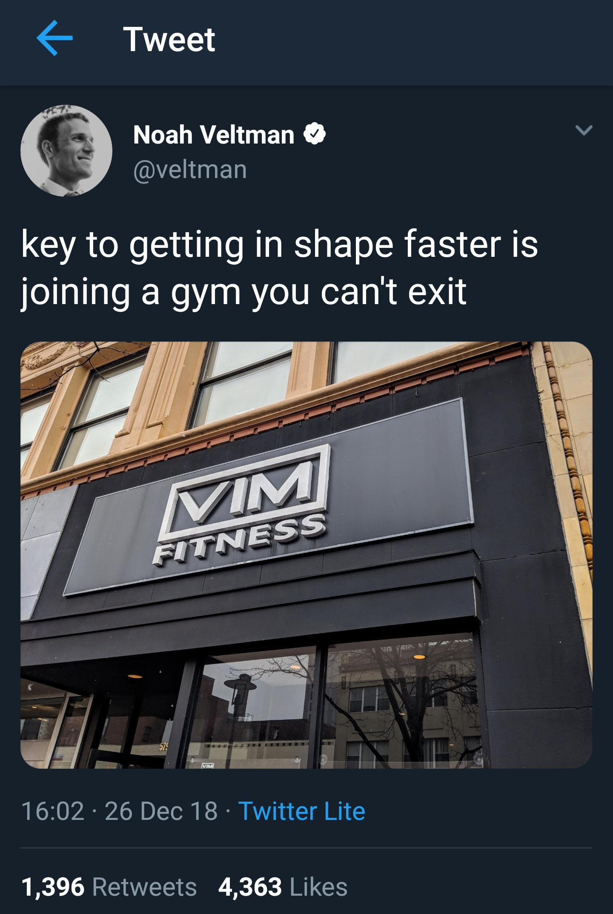

class: center, middle # LC101 ### Instructor: Aleesha Moran --- My Journey - Attended college to pursue secondary education in mathematics - Changed to pursue advanced mathematics - Grad school was awful. Quit. - Couldn't find a job. In comes LC. - Student, TA, Instructor. - Now, Professional Software Developer --- <div class="med2-img"> </div> --- class: center, middle # Unit 2 ## Web Fundamentals --- ### About This Unit - Web fundamentals using - Python with Flask - HTML, CSS - SQL - Lots of Videos! CODE WITH THEM! - Use the objectives to test yourself --- ### Important Unit 2 Links - [Class Schedule](https://education.launchcode.org/web-fundamentals/classes/) - [Canvas](https://learn.launchcode.org/) - [GitHub](https://github.com) - [Discourse](https://help.launchcode.org/) - Other Resources: - [Codecademy](https://www.codecademy.com/) - [Udemy](https://www.udemy.com/) - [Udacity](https://www.udacity.com/) --- ### Structure of Unit 2 Classes 1. Studio Solution 1. "Lecture" (Live coding) 1. Graded Exercise Clarifications 1. Studio Walkthrough 1. Studio 1. Work on Exercises/HW/Whatever --- class: center, middle # Class 1 Lecture --- ### Topics - `git` - HTML --- ### `git` - What is it? - Why is it useful? - Why do students hate it (at first)? - Windows Users: what is the difference between `git` and GitBash? - Everyone: what is the difference between `git` and GitHub? - We will discuss GitHub more next class --- class: center, middle # Command Line Demo? --- ### `git` Demo - `init` - `clone` - `branch` - `checkout` - `status` - `add` - `commit` - `log` --- ### `git` Demo - What if I forget the `-m` when I commit? - What happens if I run into a merge conflict? --- <div class="med-img">  </div> --- class: center, middle # Q&A --- class: center, middle # [Studio Walkthrough](https://education.launchcode.org/web-fundamentals/studios/fake-news/)